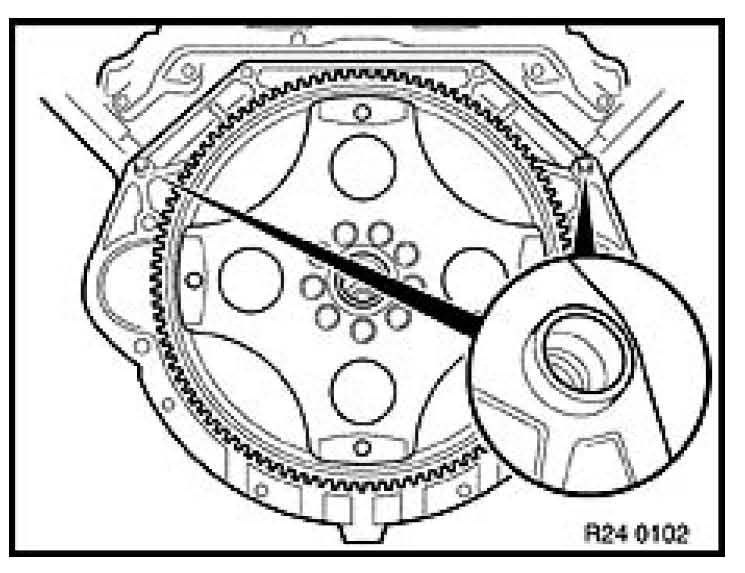
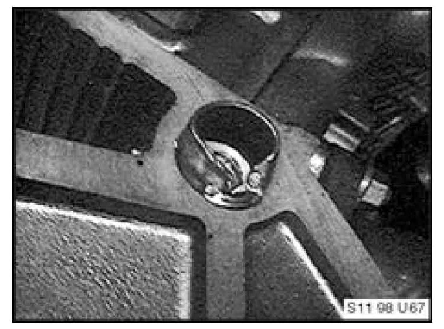
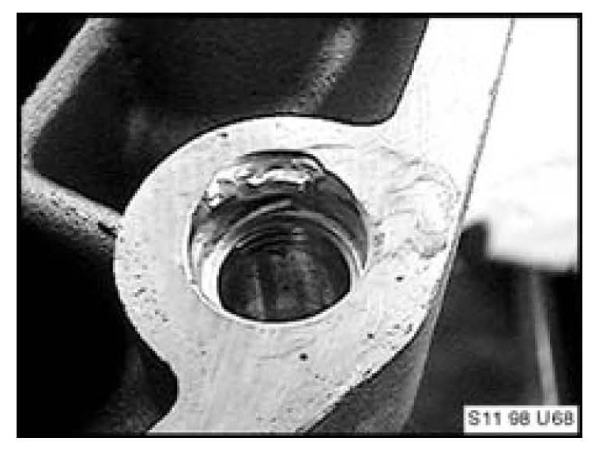

Engine - Removal/Installation Tips
SI B11 05 11Engine
December 2011
Technical Service
This Service Information bulletin replaces SI B 11 04 96 dated February 1998.
SUBJECT
Engine Removal and Installation Tips
MODEL
All
SITUATION
If repairs involving the removal and installation of the engine become necessary, the transmission must always be removed first as outlined in the repair manual.
Note:
Always support the engine and transmission using the appropriate special tools to avoid automatic transmission oil pump damage due to engine and transmission "sagging" at the mating point (engine block to transmission bell housing) before the fastening bolts are removed.
Before reinstallation of the transmission, the dowel sleeves must be removed from the transmission bell housing and installed in the engine block as outlined in the repair manual and shown in the illustration below.

Note:
The transmission bell housing and engine block mating surfaces must always seat flush with each other (dowels seated in holes) before the bolts are installed and tightened to avoid damage as seen in the illustrations below.


Failure to follow the proper repair procedures will result in engine and or transmission damage due to engine/transmission misalignment.
Additional installation information can be found in "Transmission Failures Due to Incorrect Installation".
WARRANTY INFORMATION
The warranty does not apply to the following:
Damage that results from improper repair.
Claims for engines replacements that result from the situation described in this Service Information bulletin will not be accepted.